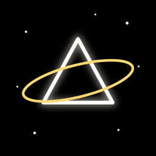
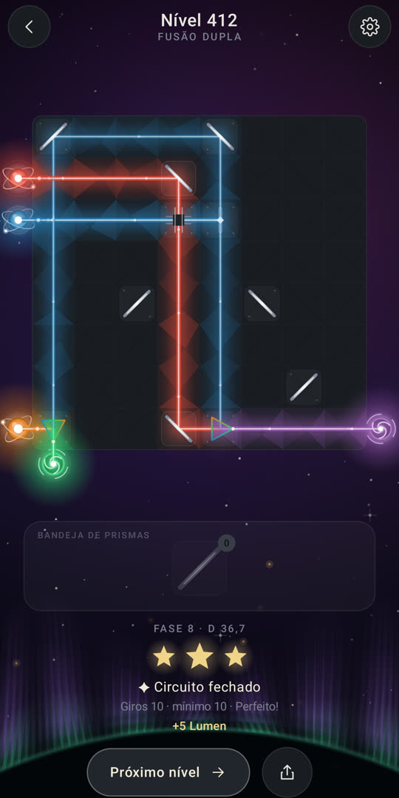
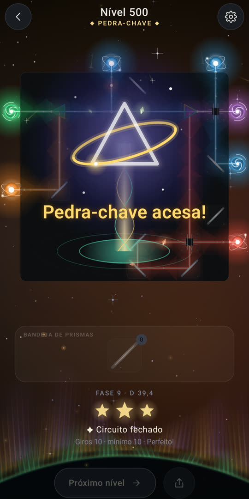
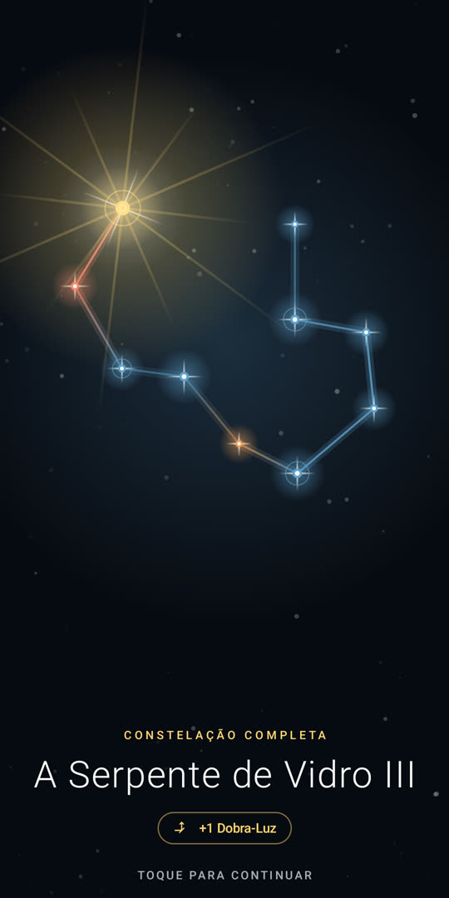

TESSERA
Tessera é um quebra-cabeça calmo de luz e espelhos para Android. Gire espelhos, divida feixes e funda cores até todos os receptores brilharem, e veja cada tabuleiro resolvido virar um vitral. Sem cronômetro, sem vidas, nada para comprar.
Em breve no Google Play · em 9 idiomas, incluindo Português



- Os espelhos dobram o feixe, os divisores o separam, os combinadores fundem cores (âmbar e cobalto fazem esmeralda), as pontes deixam os feixes se cruzarem
- Cada nível é verificado por máquina: tem solução e uma única solução mais curta; iguale-a para ganhar três estrelas
- Um Atlas do Céu de constelações, cada uma um papel de parede animado para a sua tela inicial
- Joga-se entre as estrelas: a luz vai dos pulsares a galáxias que giram, e cada fase é um novo setor do espaço
- Cada som é sintetizado ao vivo numa escala pentatônica; joga-se com um só polegar
- Sem banners: um anúncio curto de vez em quando entre telas, e vídeos que você escolhe assistir em troca de uma recompensa
- Compartilhe seu cartão de pontuação, desafie um amigo no mesmo tabuleiro e leve seu céu como widget na tela inicial
- Conquistas opcionais do Google Play Games; os quebra-cabeças também funcionam sem internet
Perguntas
Que tipo de jogo é Tessera?
Um quebra-cabeça de lógica sobre a luz: você gira espelhos e coloca prismas para que cada feixe chegue ao receptor da sua cor. É calmo (sem cronômetro nem vidas), mas é um quebra-cabeça de verdade: as últimas fases pedem longas cadeias de reflexos, feixes divididos e fusões de cor.
É grátis? Tem anúncios?
É grátis e não tem compras no app. Não há banners; de vez em quando pode aparecer um anúncio curto em tela cheia entre telas (nunca no meio de um quebra-cabeça), e você pode escolher assistir a vídeos curtos em troca de uma recompensa, como uma dica extra ou um reforço.
Quantos níveis existem?
1.000, em dez fases, de um único espelho até matrizes ópticas de cores fundidas. Cada décimo nível é uma Pedra-Chave de moldura dourada, a mais difícil do seu capítulo.
Dá para jogar offline?
Sim, os quebra-cabeças funcionam sem internet. Os anúncios e as conquistas do Play Games precisam de conexão.
Em quais aparelhos funciona?
Android 8.0 ou posterior, em celulares, tablets e dobráveis (em telas grandes também gira na horizontal).
Política de privacidade (em inglês) · Termos de uso (em inglês)